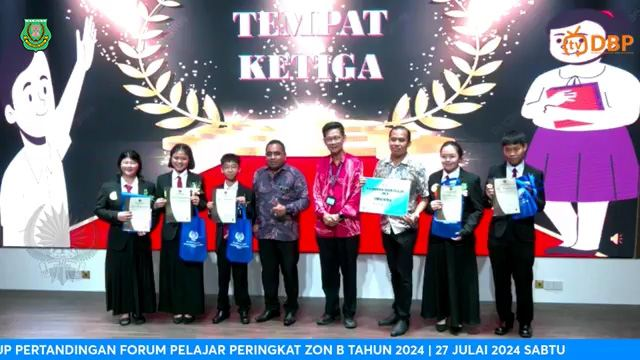
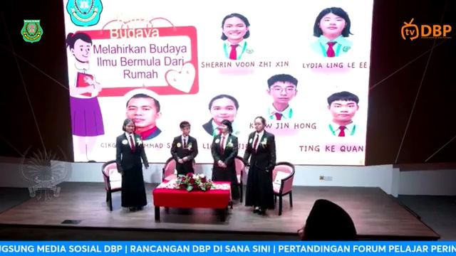
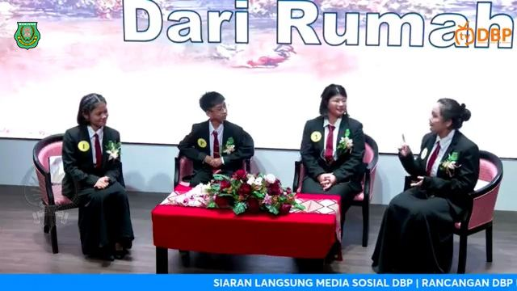
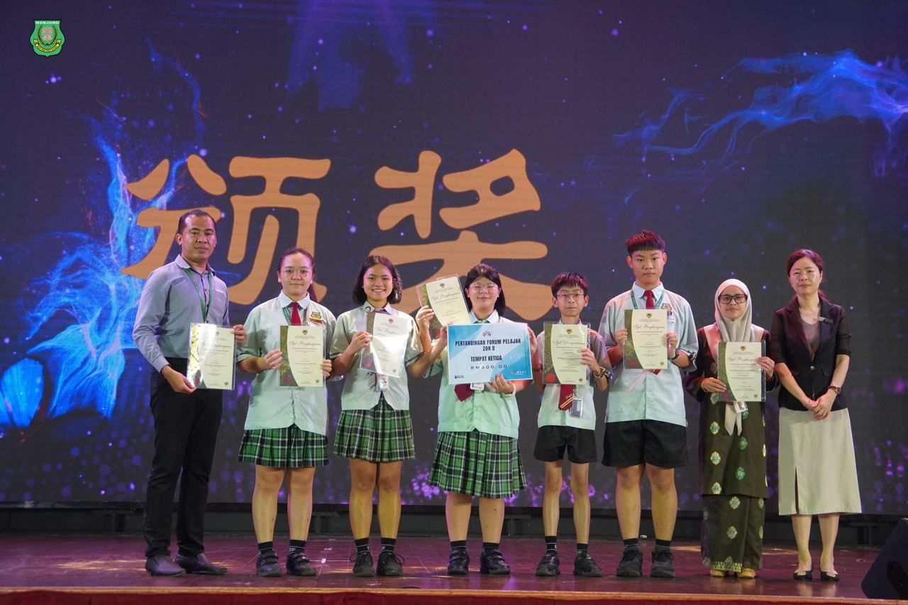

全霹雳九独中国语论坛比赛
全霹雳九独中国语论坛比赛
南华独中荣获季军
南华独中于全霹雳九独中国语论坛比赛中，以"Melahirkan Budaya Ilmu Bermula dari Rumah"（从家庭开始培养知识文化）为主题参赛，凭借出色的表现荣获季军。
参赛团队由主席许晋弘带领，成员包括温紫芯、林美静和林乐语担任小组成员，陈柯权作为替补队员。指导老师南华独中国语组主任Cikgu Athikah 以及国语老师Cikgu Shahril。
南华独中校长陈丽冰博士表示，独中生向来三语并重，尤其重视听说读写。国语论坛团队的积极备赛终于不负众望，在比赛中充分展现了各自的才智和口才，夺得佳绩。陈校长勉励学生比赛不仅是一次竞技，更是一次难得的学习机会，要把握每次的比赛机会展现最好的自己。
国语组主任Cikgu Athikah表示，看到学生们在台上自信满满地表达自己的观点而感到非常欣慰，学生们的进步是显而易见的，并且还有更多的提升空间。Cikgu Shahril补充道，备赛过程虽然艰辛，但学生们的热情和努力让所有的准备得以开花结果，并希望这次的成绩将激励他们在未来更加出色。



